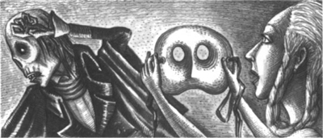

11
Listen to Part 1:

Bóng ma trong Nhà hát Opera
Căn phòng hình tròn nóng kinh khủng. Những tấm gương thì nóng khủng khiếp. Raoul đưa tay chạm vào kim loại. Anh ta hét ầm lên. Cây kim loại cũng nóng đến khủng khiếp.
‘Christine,’ anh ấy kêu lớn. ‘Chúng ta sẽ bị thiêu sống mất!’
Chúng tôi lại một lần nữa nhìn qua cửa thông gió.
‘Christine,’ Raoul nói. ‘Làm ơn hãy cứu chúng tôi.’
‘Hãy đảo con cá ngược lại!’ Erik nói với Christine. ‘Cứu bạn của cô!’
Christine đến chỗ tay nắm trên tường. Cô chạm tay vào con cá kim loại. Chờ đợi trong chốc lát, liệu cô có tin lời Erik? Cô vội vàng đảo tay núm. Đột nhiên, chúng tôi nghe thấy một tiếng động lớn.
‘Tốt lắm!’ Erik nói. ‘Tốt lắm! Nhưng hãy nhớ lời tôi nói, Christine. Con cá này ẩn chứa một bí mật!
Vài giây sau, căn phòng trở nên mát mẻ hơn. Cả bọn chúng tôi đều thở dễ dàng hơn.
Lại nghe thấy một tiếng động khác. Cửa sập trên sàn chúng tôi bật mở ra. Nhưng chúng tôi không thoát được khỏi phòng hình tròn qua cửa sập này. Cái tầng hầm bên dưới cửa sập đã ngập đầy nước. Và nước thì tràn lên thông qua cửa sập.
Listen to Part 2:
Nước tràn vào căn phòng hình tròn rất nhanh. Chẳng mấy chốc, nước dâng đến đầu gối chúng tôi.
‘Hãy dừng nước lại, Erik!’ Tôi kêu gào.
Chúng tôi lại nghe thấy tiếng cười điên dại của Erik.
‘Christine đã cứu họ khỏi ngọn lửa,’ hắn nói. ‘Nhưng ta sẽ không cứu các người khỏi nước đâu. Các người sẽ chết!’
‘Erik!’ Tôi kêu to, ‘Tôi đã cứu sống anh. Hãy nhớ mà! Nhà vua Ba Tư đã bảo tôi: “Ngươi hãy theo đuôi Erik và giết hắn ta đi!”, nhưng tôi đã không giết anh, Erik ạ! Hãy nhớ lấy điều đó đi!’
Nước tràn vào phòng càng lúc càng nhanh hơn. Tức khắc, nó dâng tới cánh tay chúng tôi. Christine khóc nức nở.
‘Christine! Làm ơn hãy cứu chúng tôi!’ Raoul lại kêu lên.
‘Hãy cứu họ, Erik,’ Christine nói. ‘Làm ơn hãy đem một cái thang đến giúp họ. Làm ơn hãy mở cửa sập trong cái song sắt này ra. Hãy cho họ trèo lên để thoát khỏi chỗ ngập nước này.’
Erik chẳng nói chẳng rằng. Hắn đang cúi xuống nhìn chúng tôi qua cái song sắt. Hắn bắt đầu cười phá lên. Quả là điên thật rồi! Tôi thương hại Erik biết bao. Tôi đã cứu sống hắn, thế mà hắn lại muốn giết tôi. Hắn muốn giết Raoul. Sắp tới hắn sẽ giết cả tôi nữa. Hắn sẽ đưa Christine đi mất!
Listen to Part 3:
‘Christine!’ Tôi kêu to. ‘Cô đã thấy khuôn mặt không hề đeo mặt nạ của Erik chưa? Tôi thì thấy rõ khuôn mặt của hắn rồi. Nó ghê tởm lắm!
Nước tràn đến cổ chúng tôi. Chúng tôi bắt đầu bơi. Nhưng đầu tôi đập vào cửa thông gió. Càng nhiều nước đổ vào phòng thì càng tệ hơn. Chỉ một lát nữa thôi là chúng tôi sẽ chết đuối.
Christine đã nghe những lời tôi nói. Erik chính là thiên thần âm nhạc của Christine. Cô chưa từng thấy mặt của hắn!
Cô nhìn Erik. Cô nhìn Raoul, rồi cuối cùng thì cô nhìn sang tôi.
Đột nhiên, Christine giật mặt nạ trên mặt Erik ra. Cô nhìn vào gương mặt hắn. Lúc trước tôi cứ thắc mắc không biết Erik trông như thế nào. Tôi thực sự muốn chứng kiến khuôn mặt ấy. Nhưng với Christine thì không! Cô sẽ hét lên chăng?
Khuôn mặt Erik trắng bệch như tờ. Đôi mắt như hai cái hố đen trũng sâu in trên gương mặt trắng đó. Hắn không có tóc và cũng không có mũi. Gương mặt hắn giống như gương mặt của xác chết vậy! Đó chính là bí mật của Erik!
Nhưng Christine đã không hét lên! Cô áp hai tay vào mặt. Còn Erik cũng đưa tay che mặt.

‘Christine,’ Erik thì thào nhỏ nhẹ, ‘Cô đã tận mắt nhìn thấy khuôn mặt tôi rồi, liệu cô còn có thể yêu tôi không?’
‘Vâng, tôi vẫn yêu anh,’ Christine trả lời. ‘Tôi từng hát tặng anh. Anh là người thầy vĩ đại nhất của tôi. Đối với tôi, anh mãi mãi là người thầy đáng kính. Nhưng tôi cũng yêu Raoul nữa. Erik làm ơn hãy cứu Raoul và chàng Ba Tư.’
Listen to Part 4:
Erik nhìn Christine chăm chú, rồi đột nhiên hắn mở cửa sập ở cái song sắt ra.
‘Ta sẽ làm điều này vì Christine!’ Erik hét lớn.
Hắn nắm tay tôi, kéo tôi lên căn phòng bên trên. Với Raoul, tôi cũng quay lại kéo hắn ra khỏi chỗ ngập nước. Tôi kéo hắn vào căn phòng.
Raoul chạy về phía Christine và ôm chặt nàng.
Erik đứng bên cạnh song sắt, nước tràn qua khe hở của nó. Đổ vào phòng rất nhanh. Chẳng mấy chốc, nước đã ngập đến chân chúng tôi.
Erik lẩm bẩm một mình: ‘Chúng ta hãy trốn thoát đi,’ hắn nói. ‘Chúng ta sẽ rời bỏ Paris ngay thôi. Christine sẽ mãi là người phụ nữ hạnh phúc của ta, chưa bao giờ ta được như thế.’
‘Hãy đi thôi,’ tôi nói với Raoul và Christine. ‘Chúng ta phải đi nhanh thôi. Erik đã mất trí rồi.’
Raoul, Christine và tôi đều chạy theo Christine đến một cái cầu thang. Rồi nhanh chóng cả bọn trèo lên cầu thang. Bỗng nhiên, chúng tôi nghe thấy tiếng nước chảy xối xả ngay phía sau. Cùng với đó là tiếng đàn violin rất hay và buồn thảm, tôi từng nghe thấy tiếng nhạc này mười năm trước. Tôi nghe thấy ở một bãi cát trên bờ biển Brittany, Christine cũng nghe thấy tiếng nhạc đó.
Phải rất lâu sau khi leo xong cầu thang, chúng tôi mới dừng lại nghỉ ngơi. Tôi nhìn ra phía sau.
Người đàn ông kỳ dị kia vẫn đang ngồi đàn violin. Nước vẫn không ngừng tràn vào căn phòng kia. Đã ngập đến cánh tay của Erik. Hắn ngước lên nhìn tôi, tôi lại một lần nữa nhìn thấy gương mặt kinh tởm của Erik.
Listen to Part 5:
Ngay sau đó, tiếng đàn violin đột ngột dừng lại. Vậy là bóng ma trong Nhà hát Opera đã thực sự... chết!
Mục lục
- Tiêu đề
- Mục lục
- Ghi chú về tác giả
- Ghi chú về câu chuyện này
- Những người trong câu chuyện này
- 1 Thiên thần âm nhạc
- 2 Một buổi tiệc tại Nhà hát Opera
- 3 Raoul đến Nhà hát Opera
- 4 Phòng số 5
- 5 Gương trong phòng thay đồ
- 6 Vũ hội hóa trang
- 7 Câu chuyện của người Ba Tư
- 8 Christine biến mất!
- 9 Dưới Nhà hát Opera
- 10 Hồ và cây
- 11 Bóng ma Nhà hát Opera
- Bản quyền